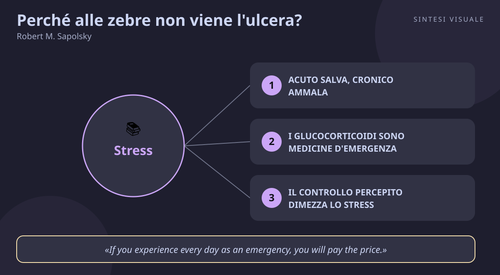

Home / Libri / Perché alle zebre non viene l'ulcera?

Perché alle zebre non viene l'ulcera?
Robert M. Sapolsky · Gestione dello stress
«Perché alle zebre non viene l'ulcera?»
- Acuto vs cronico
- Controllo percepito
- Sfogo e branco
- Sonno e movimento
🧭Introduzione
Robert Sapolsky è un biologo e neuroscienziato di Stanford che ogni anno, per decenni, ha passato le estati in Kenya a studiare i babbuini nella savana: li seguiva, ne misurava gli ormoni dello stress e ne osservava le gerarchie sociali. Da quella ricerca sul campo — unita al lavoro in laboratorio sul cervello — è nato questo libro, diventato il manuale di divulgazione più autorevole sulla biologia dello stress.
Perché conta oggi: viviamo sommersi da scadenze, notifiche, mutui, traffico e riunioni — e il nostro corpo affronta tutto questo con lo stesso sistema d'allarme che serve a scappare da un leone. Sapolsky spiega, con rigore scientifico e molto umorismo, perché è proprio questo scollamento tra un corpo fatto per le emergenze brevi e una vita fatta di preoccupazioni continue a farci ammalare.
A chi è utile: a chi si sente sempre sotto pressione al lavoro; a chi dorme male e mangia male nei periodi tesi; a manager, venditori e genitori che vogliono capire cosa succede nel loro corpo quando "sono stressati" — e cosa farci davvero, al di là dei consigli generici tipo "rilassati".
📘Riassunto
La scintilla centrale: la risposta allo stress è perfetta per le emergenze fisiche brevi (scappa o combatti, poi tutto torna normale), ma noi la accendiamo per mesi interi con preoccupazioni puramente psicologiche — ed è questa attivazione cronica di un sistema nato per l'acuto a produrre malattie.
La struttura logica procede dal corpo alle soluzioni:
- La fisiologia dell'allarme: durante lo stress il corpo mobilita energia verso i muscoli, alza pressione, battito e respiro — e intanto spegne tutto ciò che serve al lungo periodo: digestione, crescita, riproduzione, difese immunitarie.
- Il tour dei danni: capitolo dopo capitolo, Sapolsky mostra cosa succede quando questo stato d'emergenza non si spegne mai — cuore e vasi (ipertensione, aterosclerosi), metabolismo (affaticamento, diabete), intestino, immunità, sessualità, memoria e invecchiamento cerebrale.
- I babbuini e la gerarchia: gli animali subordinati, che subiscono lo stress sociale senza controllo né prevedibilità, sono quelli più malati — lo specchio esatto delle disuguaglianze di salute tra esseri umani.
- La gestione: l'ultimo capitolo raccoglie ciò che la scienza dice davvero sul contenere i danni — controllo, prevedibilità, sfoghi, legami sociali, sonno ed esercizio.
Il punto di svolta: il capitolo sulla gerarchia tra i babbuini, dove il lettore capisce che non è lo stress in sé a farci ammalare, ma la mancanza di controllo, di prevedibilità e di vie d'uscita. Da lì il libro smette di essere anatomia e diventa una guida pratica alla libertà interiore.
L'eredità oggi: pubblicato nel 1994 e aggiornato fino al 2004 con nuovi capitoli su sonno e dipendenze, è ancora il riferimento della medicina dello stress; la distinzione tra stress acuto e cronico che Sapolsky ha reso celebre è entrata nei manuali di psicologia, nelle aziende e persino nei corsi di Stanford visibili gratis online.
💡Concetti chiave
- Acuto salva, cronico ammala: la zebra scappa dal leone e poi si calma; noi rimuginiamo per mesi sullo stesso pericolo immaginario.
- I glucocorticoidi sono medicine d'emergenza: utilissimi per ore, velenosi per mesi — deprimono immunità, memoria e metabolismo.
- Il controllo percepito dimezza lo stress: a parità di scossa, soffre meno chi può fare qualcosa — anche premere un bottone inutile.
- La prevedibilità rende sopportabile l'inevitabile: un segnale d'avviso prima dello stress ne riduce enormemente il danno.
- Sfogo e branco guariscono: scaricare la frustrazione in un'azione e stare con persone fidate abbassa davvero gli ormoni dello stress.
- Dormi e muoviti: la fisiologia non si discute: sonno ed esercizio fisico sono gli interruttori più potenti per spegnere l'allarme.
📖1. Acuto salva, cronico ammala
- Definizione la risposta allo stress è un programma d'emergenza — adrenalina e cortisolo mobilitano zuccheri ai muscoli, il cuore pompa di più, il dolore si attenua e i sensi si acuiscono. Funziona alla perfezione se dura minuti; se dura mesi, gli stessi meccanismi logorano vasi, stomaco, ossa e cervello.
- Esempio la zebra avvista il leone, corre come una matta per tre minuti e poi torna a brucare tranquilla. Tu invece alle tre di notte ripensi alla mail del capo e il tuo corpo reagisce come se il leone fosse nella stanza — solo che il "leone" non se ne va mai.
- Come applicarlo (a) quando senti la tensione, chiediti "c'è un leone vero o è un leone di carta?" — se è carta, dillo a voce alta; (b) chiudi davvero le emergenze: spegni le notifiche dopo cena, così il corpo riceve il segnale che il pericolo è passato; (c) concediti recuperi veri tra un periodo intenso e l'altro.
- Errore comune credere che il problema sia "troppo stress" in assoluto — atleti e chirurghi vivono picchi enormi e stanno bene. Il veleno è la continuità senza recupero, non l'intensità.
- Collegamento Hans Selye e la sua "sindrome generale di adattamento" (allarme, resistenza, esaurimento); in chiave moderna, il concetto di carico allostatico di McEwen — il prezzo che il corpo paga per adattarsi.
📖2. I glucocorticoidi sono medicine d'emergenza
- Definizione i glucocorticoidi (cortisolo in testa) sono gli ormoni steroidei che le surrenali rilasciano sotto stress: perfetti per liberare energia subito, ma se restano alti per settimane sopprimono le difese immunitarie, assottigliano la memoria danneggiando l'ippocampo, alzano la glicemia e bloccano crescita e riparazione dei tessuti.
- Esempio dopo un mese di straordinari dormi cinque ore, prendi ogni raffreddore che gira in ufficio, dimentichi nomi che conosci da anni e hai sempre fame di dolci — non è sfortuna, è il tuo cortisolo che ha spento manutenzione e difese per alimentare l'emergenza.
- Come applicarlo (a) tratta i periodi di fuoco come tali: accetta il calo di difese e programma il recupero appena finiscono; (b) non aggiungere stress chimico allo stress mentale — alcol e notti in bianco alzano ancora il cortisolo; (c) se i sintomi durano oltre l'emergenza (insonnia, raffreddori continui, vuoti di memoria), parlane con il medico invece di normalizzarli.
- Errore comune pensare che "lo stress fa venire l'ulcera" in senso diretto — come ricorda lo stesso Sapolsky, a provocare l'ulcera è un batterio; lo stress cronico crea però le condizioni in cui il corpo non riesce più a difendersi.
- Collegamento gli studi sull'ippocampo e la memoria (Sapolsky è stato tra i primi a legare cortisolo cronico e atrofia ippocampale); il diabete di tipo 2 come malattia da mobilitazione energetica perenne.
📖3. Il controllo percepito dimezza lo stress
- Definizione a parità di evento stressante, chi crede di poter influire sulla situazione — anche solo in parte — produce meno ormoni dello stress e si ammala di meno. Gli esperimenti classici mostrano che un animale che può interrompere una scossa con una leva sta molto meglio di uno che la subisce passivamente, pur ricevendo la stessa scossa.
- Esempio due colleghi subiscono lo stesso taglio di budget: uno passa le giornate a lamentarsi al distributore del caffè, l'altro prepara tre scenari di risparmio e li porta al capo. Il taglio è identico, ma il secondo dorme meglio — ha ritrovato un pezzo di volante.
- Come applicarlo (a) di fronte a un problema, elenca per iscritto cosa puoi controllare e cosa no, e lavora solo sulla prima lista; (b) spezzetta le minacce vaghe in azioni piccole e concrete con una scadenza; (c) nei team, dai alle persone almeno una scelta (quando, come, in che ordine) — la percezione di controllo è contagiosa.
- Errore comune cercare il controllo totale — illusione che genera ancora più stress quando la realtà non obbedisce. Conta il controllo su qualcosa, non il controllo su tutto.
- Collegamento gli studi di Robert Yerkes e poi di Seligman sull'impotenza appresa; nei babbuini di Sapolsky, i dominanti stanno meglio proprio perché prevedono e controllano di più.
📖4. La prevedibilità rende sopportabile l'inevitabile
- Definizione uno stress annunciato da un segnale chiaro fa meno danni dello stesso stress che arriva a sorpresa. Sapere quando comincia e quando finisce permette al corpo di accendere l'allarme solo per il tempo necessario, invece di tenerlo acceso "per sicurezza" tutto il giorno.
- Esempio una visita dal dentista fissata con giorno, ora e durata spaventa meno di un dolore misterioso che potrebbe esplodere da un momento all'altro — e lo stesso vale per una ristrutturazione annunciata con tempi chiari rispetto a mesi di voci di corridoio.
- Come applicarlo (a) trasforma le minacce vaghe in appuntamenti: "giovedì alle 18 decido sul preventivo" è meglio di una settimana di rimuginio; (b) se devi dare brutte notizie, dalle con tempi e contorni precisi — l'incertezza fa più male della cattiva notizia; (c) crea rituali che segnalano la fine dell'allarme (una passeggiata dopo il lavoro, il telefono in un cassetto).
- Errore comune rimandare le informazioni "per non preoccupare" — il silenzio alimenta la peggiore delle previsioni, e il corpo resta in allarme continuo.
- Collegamento la terapia dell'esposizione in psicologia (l'ansia cala quando lo stimolo diventa prevedibile); il principio di Getting to Yes di Fisher e Ury — separare le persone dal problema riduce proprio l'imprevedibilità sociale.
📖5. Sfogo e branco guariscono
- Definizione due ammortizzatori sociali riducono misurabilmente gli ormoni dello stress: avere uno sbocco per la frustrazione (fare qualcosa, qualsiasi cosa, invece di subirla) e avere legami di supporto (persone con cui lamentarsi, ridere, sentirsi capiti). Nei primati, la toelettatura reciproca abbassa il cortisolo — il nostro equivalente sono le conversazioni vere con persone fidate.
- Esempio dopo una giornata orribile, uno sfoga la rabbia sistemando il garage a ritmo di musica e poi cena con un amico raccontando tutto; l'altro resta solo sul divano a ripensarci in loop. Il giorno dopo il primo ha la pressione normale, il secondo ha ancora il nodo allo stomaco.
- Come applicarlo (a) dopo ogni botta di stress, programma entro poche ore un'azione fisica di scarico — camminata, sport, pulizie, bricolage; (b) coltiva almeno due o tre relazioni "da sfogo" e usale davvero, senza vergogna; (c) nei team di lavoro, chiudi le settimane dure con un momento di racconto condiviso, non con il silenzio.
- Errore comune sfogarsi addosso agli altri in modo aggressivo ("dare le ulcere agli altri", come ironizza Sapolsky) — scarica te ma avvelena il branco, e alla lunga ti isola proprio quando avresti bisogno di supporto.
- Collegamento gli studi sul supporto sociale e la longevità (le persone integrate socialmente vivono più a lungo); la "mentalità dell'artigiano" di Cal Newport applicata alle relazioni — le amicizie profonde vanno costruite con intenzionalità, non subite.
📖6. Dormi e muoviti: la fisiologia non si discute
- Definizione sonno ed esercizio sono le due leve corporee più documentate per spegnere la risposta allo stress: il sonno resetta cortisolo e consolida la memoria (ed è tra i primi a saltare sotto stress, in un circolo vizioso), mentre il movimento brucia letteralmente i carburanti mobilitati dall'allarme e segnala al cervello che "l'emergenza è finita, abbiamo corso".
- Esempio nella settimana del trasloco dormi quattro ore e salti la corsa abituale: al giovedì esplodi per un nonnulla con tuo fratello. Non sei diventato una persona peggiore — sei una persona senza recupero fisiologico.
- Come applicarlo (a) proteggi il sonno come un appuntamento di lavoro: orari regolari, schermi spenti prima di dormire, camera fresca e buia; (b) mantieni almeno 20-30 minuti di movimento al giorno nei periodi peggiori — meglio poco che niente; (c) se l'insonnia da rimuginio persiste oltre due settimane, affrontala come un problema a sé (medico, diario serale, tecniche di rilassamento) invece di subirla.
- Errore comune sacrificare sonno e sport "finché non passa il periodo brutto" — è come togliere l'acqua ai pompieri durante l'incendio. Sono proprio le prime cose da difendere, non le prime da tagliare.
- Collegamento i nuovi capitoli della terza edizione del libro, dedicati a sonno e dipendenze; Atomic Habits di James Clear — rendere il movimento ovvio e facile batte qualsiasi motivazione nei periodi duri.
💬Citazioni da ricordare
"If you experience every day as an emergency, you will pay the price." — Se vivi ogni giorno come un'emergenza, ne pagherai il prezzo. È la tesi del libro in una frase: non è il singolo spavento a ucciderci, è la quotidianità vissuta in allarme.
"Sustained or repeated stress can disrupt our bodies in seemingly endless ways." — Lo stress prolungato o ripetuto può scombussolare il nostro corpo in modi apparentemente infiniti. Conta perché spazza via l'idea che lo stress sia "solo nervosismo": tocca cuore, intestino, difese, memoria e umore.
Non è lo stress in sé a farci ammalare, ma la mancanza di controllo, di prevedibilità e di vie d'uscita — ed è qui che possiamo intervenire ogni giorno, anche senza cambiare lavoro o vita. E ricorda la scena d'apertura del libro: alle tre di notte non ci sveglia un leone vero, ma un leone immaginato — e il corpo non sa distinguere i due.
🌍Esempi di oggi
- La mail del capo alle 23:00: vibra il telefono, leggi "dobbiamo parlare domani" e il cuore impazzisce — cortisolo e adrenalina come davanti a un predatore. Ma è un leone di carta: niente è successo davvero, e passerai la notte in allarme per una frase che domani potrebbe rivelarsi banale.
- Il traffico dell'ora di punta: sei fermo in coda senza poter fare nulla, senza sapere quando finirà — zero controllo più zero prevedibilità, la ricetta perfetta dello stress cronico secondo Sapolsky. Chi ha un percorso alternativo, un audiolibro o orari flessibili sta misurabilmente meglio pur facendo gli stessi chilometri.
- Il collega che "dà le ulcere": c'è sempre qualcuno che scarica la sua tensione sugli altri — battute velenose, scenate, email acide. Come ironizza Sapolsky, lui forse sta meglio dopo essersi sfogato, ma avvelena l'intero branco: il team si ammala di più e lavora peggio.
🛠️Azioni pratiche
- Fai il test del leone: ogni volta che senti la tensione salire, fermati dieci secondi e chiediti "è un leone vero o di carta?". Se è di carta, scrivi su un foglio la prima azione concreta e la data in cui la farai — poi chiudi il pensiero.
- Prenota il recupero: fissa nella settimana due appuntamenti non negoziabili — una camminata o corsa di almeno 20 minuti e una serata con sonno protetto (schermi spenti un'ora prima). Difendili come difenderesti una riunione col cliente più importante.
- Costruisci un pezzo di controllo: prendi la preoccupazione che ti rode di più, dividila in "cosa posso controllare" e "cosa no", e fai entro venerdì una sola azione dalla prima lista — anche piccola. Poi raccontala a una persona fidata: sfogo più branco, in un colpo solo.
💎Da portare a casa
La zebra corre quando serve e poi torna a brucare: impara a spegnere l'allarme quando il leone non c'è, e il tuo corpo smetterà di pagare il prezzo delle emergenze immaginarie.
E tu? Rispondi in chat con il numero del concetto che vuoi approfondire (1–6) — oppure chiedimi pure di un tema collegato: gestione dello stress, sonno ed energia, emozioni, lavoro e carriera. Se vuoi, ti preparo anche una mini-sfida personalizzata di 7 giorni anti-stress.
🖼️In un colpo d’occhio

Tocca l’immagine per ingrandirla.